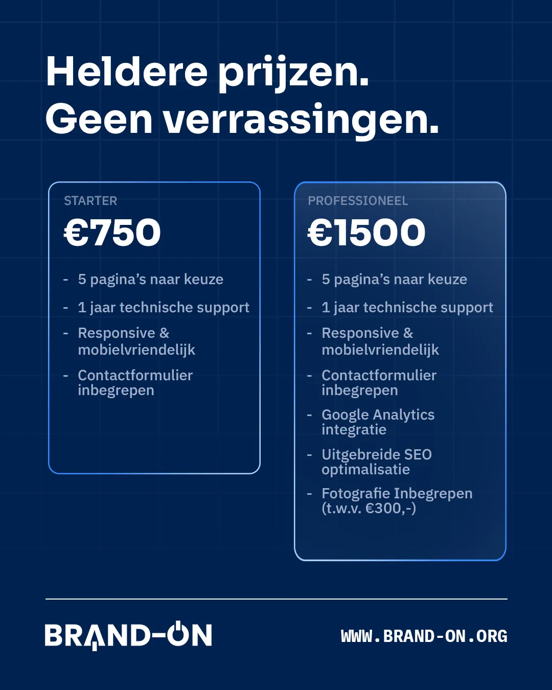

Hoeveel kost een website
voor een mkb-bedrijf?
Een website is voor het MKB een investering, en je wilt vooraf weten waar je aan toe bent. In deze prijsgids lees je wat een professionele website voor een mkb-bedrijf gemiddeld kost, waar je geld aan kwijt bent en hoe je verborgen kosten voorkomt.

Hoeveel kost een website voor een mkb-bedrijf? Het korte antwoord: voor het Nederlandse MKB ligt een professionele website meestal tussen de 750 en 2500 euro. Het exacte bedrag hangt af van wat je bedrijf nodig heeft. Hieronder leggen we uit hoe die prijs is opgebouwd, zodat je een offerte goed kunt beoordelen en niet voor verrassingen komt te staan.
Waar betaal je voor bij een mkb-website?
Een goede website is meer dan een paar mooie pagina's. De prijs bestaat uit een aantal vaste onderdelen. Wie weet waar het geld heen gaat, herkent meteen of een offerte compleet is of dat er straks rekeningen bij komen.
- Ontwerp en vormgeving. Een uniek ontwerp dat bij je merk past kost meer tijd dan een kant-en-klaar sjabloon, maar levert ook een site op die opvalt.
- Development. Het daadwerkelijk bouwen van de site, schoon en snel, geoptimaliseerd voor mobiel en desktop.
- Teksten en SEO. Goede teksten met de juiste zoekwoorden zorgen dat klanten je vinden in Google.
- Fotografie en beeld. Professionele foto's maken het verschil tussen een gemiddelde en een sterke site.
- Hosting en domein. De vaste plek waar je website draait en het adres waarop bezoekers je vinden.
- Onderhoud en support. Updates, beveiliging en het oplossen van problemen na livegang.
Wat kost een website voor een mkb-bedrijf gemiddeld?
De prijzen lopen flink uiteen, en dat is logisch. Een eenvoudige website voor een zzp'er is iets anders dan een uitgebreide site met webshop of online afspraken. Als grove richtlijn voor het MKB:
- Eenvoudige website (3 tot 5 pagina's): tussen de 500 en 1000 euro.
- Professionele bedrijfswebsite (5 tot 10 pagina's, met SEO en fotografie): tussen de 1000 en 2500 euro.
- Uitgebreide site of maatwerk (webshop, koppelingen, veel pagina's): vanaf 2500 euro en hoger.
Bij Brand-On werken we met twee heldere pakketten. Zo zien die eruit:
| Wat je krijgt | Starter · €750 | Professioneel · €1500 |
|---|---|---|
| Pagina's inbegrepen | 5 | 10 |
| Professionele fotografie | Los te boeken (+€300) | ✓ Inbegrepen |
| Uitgebreide SEO-optimalisatie | — | ✓ |
| Google Analytics | — | ✓ |
| 1 jaar hosting & support | ✓ | ✓ |
| Extra pagina's | +€75 per stuk | +€75 per stuk |
Wil je weten wat jouw website zou kosten? Met de prijscalculator op onze tarievenpagina stel je in een minuut je eigen pakket samen en zie je meteen het totaal, zonder verplichtingen.
Welke website past bij welk type mkb-bedrijf?
Het MKB is breed, en wat je nodig hebt verschilt per type ondernemer. Een paar veelvoorkomende situaties:
- Zzp'er of starter. Je wilt vooral professioneel gevonden worden en vertrouwen wekken. Een compacte site van vijf pagina's met een duidelijke dienst, contactpagina en wat reviews is vaak genoeg. Reken op 750 tot 1000 euro.
- Groeiend mkb-bedrijf. Je hebt meerdere diensten of locaties en wilt actief scoren in Google. Dan loont een uitgebreidere site met sterke SEO, fotografie en meer pagina's. Reken op 1500 tot 2500 euro.
- Webshop of boekingssysteem. Verkoop je producten of werk je met online afspraken, dan komt er techniek bij zoals betalingen en koppelingen. Dat is maatwerk en begint meestal rond 2500 euro.
Waarom verschillen de prijzen zo sterk?
Vraag drie partijen om een offerte en je krijgt drie verschillende bedragen. Dat komt door een paar factoren. Een groot bureau heeft meer overhead en rekent dat door, terwijl je bij een kleine studio direct met de makers werkt. Ook maatwerk versus een sjabloon scheelt veel, net als het aantal revisies dat je mag aanvragen en of teksten en beeld zijn inbegrepen of als meerwerk worden gerekend.
Goedkoop is niet altijd voordelig. Een website van een paar honderd euro mist vaak een doordachte structuur, goede vindbaarheid en support. Dan ben je later alsnog geld kwijt om het te herstellen. Kijk dus niet alleen naar het bedrag, maar naar wat je ervoor krijgt en wat het je bedrijf oplevert.
Welke kosten komen er na de livegang bij?
Een website laten maken is een eenmalige investering, maar daarna lopen er nog een paar vaste kosten door. Reken op hosting en een domeinnaam, en eventueel onderhoud. Bij Brand-On zit het eerste jaar technische support inbegrepen. Daarna is dat 25 euro per maand voor hosting en support. Zo blijft je site snel, veilig en up-to-date zonder dat je er omkijken naar hebt.
Hoe voorkom je verborgen kosten?
De meeste nare verrassingen ontstaan door onduidelijke afspraken. Voorkom dat met een paar simpele stappen:
- Vraag een vaste prijs en een duidelijke offerte, geen uurtarief zonder plafond.
- Laat zwart op wit zetten wat erin zit: aantal pagina's, revisies, teksten, beeld en support.
- Vraag wat een extra pagina of aanpassing kost. Bij ons is dat 75 euro per pagina, vooraf bekend.
- Controleer wie eigenaar wordt van de website en de domeinnaam.
Een mkb-website laten maken bij Brand-On
Brand-On is een webdesign studio uit Purmerend, actief in heel Noord-Holland. We zijn bewust klein, waardoor je direct met de ontwerper en de ontwikkelaar werkt. Geen tussenlagen, geen verrassingen achteraf, gewoon een heldere prijs en een site waar je trots op bent. Zoek je een webdesigner in jouw buurt? Bekijk ook onze pagina's over een website laten maken in Purmerend, Limmen of Castricum.
Hoeveel kost een website voor een mkb-bedrijf?
Hoeveel kost een website voor een mkb-bedrijf gemiddeld?
Voor het Nederlandse MKB ligt een professionele website vaak tussen de 750 en 2500 euro. Een eenvoudige site voor een zzp'er of starter kost minder, een uitgebreide site met fotografie, SEO en maatwerk meer. Bij Brand-On begin je op 750 euro voor het Starter pakket en 1500 euro voor het Professioneel pakket.
Is een goedkope website een goed idee voor een mkb-bedrijf?
Een website van een paar honderd euro mist vaak een doordachte structuur, goede vindbaarheid en support. Voor een mkb-bedrijf dat klanten via Google wil binnenhalen is dat een gemiste kans. Kijk daarom niet alleen naar de prijs, maar naar wat je ervoor krijgt en wat het oplevert.
Zijn er maandelijkse kosten voor een mkb-website?
Ja, reken op hosting en een domeinnaam. Bij Brand-On zit het eerste jaar technische support inbegrepen, daarna is dat 25 euro per maand voor hosting en support. Updates en onderhoud kun je zelf doen of aan ons overlaten.
Hoe voorkom ik verborgen kosten bij een mkb-website?
Vraag vooraf een vaste prijs en een duidelijke offerte. Laat opnemen wat er inzit qua pagina's, revisies, teksten, beeld en support. Bij Brand-On weet je vooraf wat je betaalt en kost een extra pagina 75 euro, zonder verrassingen achteraf.
Gerelateerde artikelen
Laten we jouw merk
aanzetten.
Wil je weten wat een website voor jouw mkb-bedrijf kost? Vraag een gratis concept aan, helemaal vrijblijvend. Je krijgt binnen één werkdag een persoonlijk antwoord.